-
- 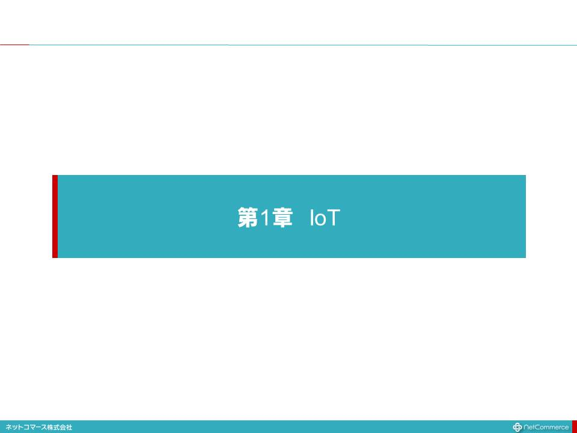
- コレ1枚でわかるモノのインターネット（IoT）
- 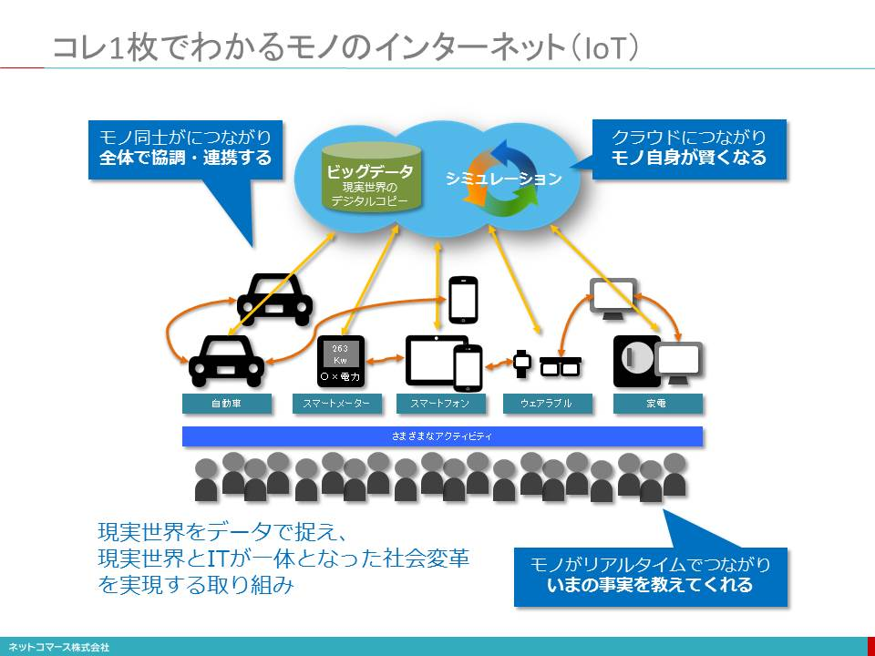
- ■■■■モノ同士がつながり全体で協調・連携する
- 前を走っている自動車がスピードを落とせば、後方の自動車もそれにあわせてスピードを落とします。自動車と信号機がつながり、通行量に応じて信号機の点灯を制御しますのでもっとスムーズな走行ができます。その結果、渋滞は解消され、無駄なガソリンの消費も抑えられ、環境にやさしい輸送が実現します。
- このように、モノ同士がつながることでモノがお互いに協調・連携しながら、全体最適を実現してくれるのです。
- ■■■■クラウドにつながりモノ自身が賢くなる
- 電子レンジはクラウド・サービスからいま話題の料理のレシピを手に入れ最適な時間や調理法を設定してくれます。
- 冷蔵庫は少なくなった常備食材を検知して自動で発注してくれます。
- 自動車に今日食べたい料理を話しかけるとおすすめのレストランを紹介し予約までしくれます。そして渋滞のない快適なルートに沿って自動車を走らせてくれるでしょう。
- ひとつひとつのモノに大きなデータや頭脳を持たせることには限界がありますが、モノにつながったインターネットの先には、ほぼ無尽蔵のデータ格納場所であり膨大な処理能力を持った頭脳であるクラウドがあります。モノは、このクラウドにデータを送り様々なデータ処理を行うことで、モノ単体ではなしえない強力な頭脳を持つことができるのです。
- ■■■■モノがリアルタイムでつながり、いまの事実を伝えてくれる
- 航空機のジェット・エンジンの稼働状況がリアルタイムに分かることで、故障や不具合を即座に把握できパイロットに適切な指示を与えることや、着陸先の空港で交換部品やエンジニアを事前に待機させておき、着陸後すぐに点検修理して次のフライトを欠航させないといった対応ができます。
- そのときの道路の混み具合や今後の渋滞予測に応じて、自分の乗っている自動車を最適なルートに誘導してくれます。
- 災害が起きたとき、スマートフォンやウェアラブルを持っている人の動きをリアルタイムで捉えながら、安全な避難経路へと誘導してくれます。
- このようにモノがリアルタイムにつながることで、これまでとは大きく異なるビジネス・モデルの実現します。
- IoTの２つの意味
- 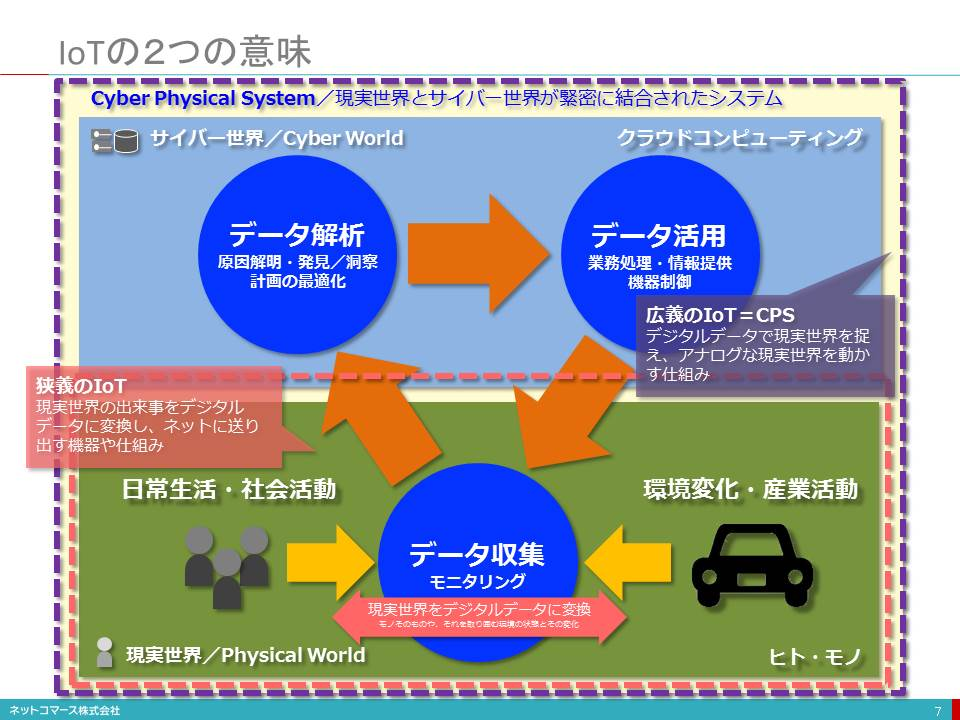
- １つは、「現実世界の出来事をデジタルデータに変換し、ネットに送り出す機器や仕組み」
- もう一つは、「デジタルデータで現実世界を捉え、アナログな現実世界を動かす仕組み」
- M2MとIoTの違い
- 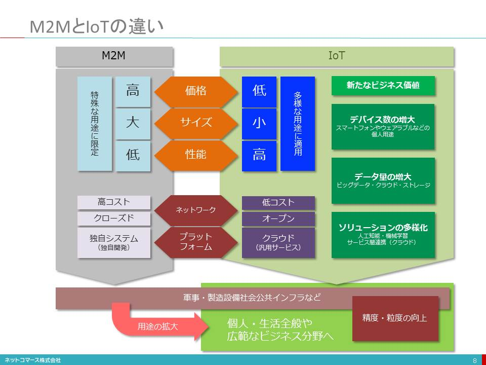
- 【図解】コレ一枚で分かるM2MとIoTの違い
- モノにセンサーを組み込み、データを収集し監視するという仕組みはIoTという言葉が登場する遙か以前からありました。1964年に開通した新幹線、1974年に運用が始まった「地域気象観測システム：アメダス」、1970年代に始まった生産設備の自動化などでも、同様の仕組みが使われていました。しかし、それらはどれも特定の業務目的に特化した仕組みで、他のサービスで再利用されるといったことは想定されていませんでした。このような仕組みは、やがてM2M (エム・ツー・エム：Machine to Machine)と呼ばれるようになります。
- その後、センサーやコンピューターの小型・高性能化、低価格化が進み、通信も高速・高性能化とともに料金が大幅に下がりました。また、インターネットやクラウドの普及とともに、M2Mの適用領域は大きく拡がります。そして、様々な「モノ」がインターネットに接続され、さらにはモノ同士がお互いにつながるようになり、IoT（アイ・オー・ティー：Internet of Things）という用語がM2Mに置き換わるように広く使われるようになりました。
- 「IoT」という用語は、1999年に無線ICタグの専門家であるケビン・アシュトンが初めて使ったとされています。彼は、当初は無線ICタグを使った商品管理システムをインターネットに例えて使っていたようですが、商品だけではなく様々なモノをインターネットにつなぐ概念として、その後転用されたと言われています。
- IoTがかつてのM2Mと本質的に違うのは、センサーを搭載した機械やモノの数が桁違いに多いことに加え、インターネットやクラウドというオープンな仕組みの上で使われ、自社以外の企業ともつながり、新たな組合せを生みだすことができることです。例えば、
- あなたが持っているスマートフォンのGPSを使えば自分の位置が分かります。そんなGPSのデータを大量に集め、その移動時間やルートを解析することで、地図上に「道路の渋滞状況」を表示させることができます。
- 自動車に組み込まれたセンサーによって運転手の運転の仕方を分析し、運転手ごとに省エネ運転や安全運転のアドバイスを行うことができます。さらにそのデータを保険会社と共有することで、安全運転をしている運転手の保険料を割り引く自動車保険が登場しています。
- 損保会社は、気象情報企業が集めた気象データを用いることで、将来における住宅や設備の損害請求を予測し、悪天候や災害が起こるリスクや影響を地域ごとに定量化することができます。そのリスク情報に基づいて、契約者個別の保険内容を組むことや財務上のリスクを減らすための取り組みができるようになります。 また、天候の悪化が予想される地域を走行しているドライバーにスマートフォンから注意を促し、近辺のスターバックスでやり過ごすように促し、そのための割引クーポンを発行できるようになります。それによって、事故を未然に防ぎ保険料の支払いを減らすことができます。
- データで様々なサービスがつながることで、IoTはビジネスに新しい組合せを生みだすエコシステムを築きます。それが、これまでには無かった便利で効率のよいサービスや社会システムを登場させる基盤となるのです。
- IoTとアプリケーション
- 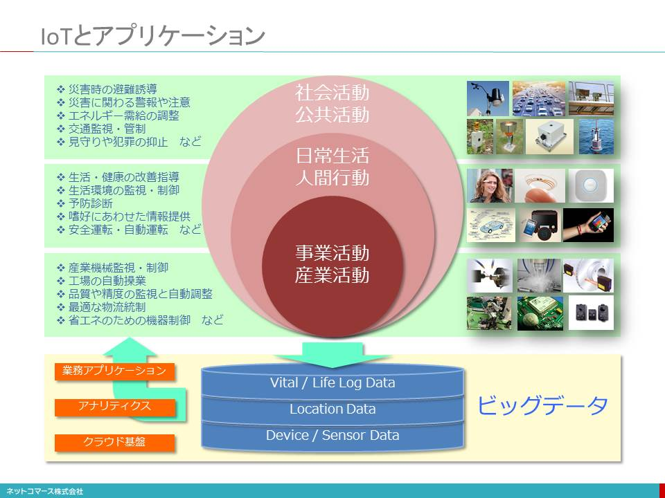
- 【図解】コレ１枚でわかるIoTアプリケーション
- IoTは、私たちの日常生活や社会活動といったアナログな現実世界の出来事をデジタル・データに置き換え、インターネットを介してクラウドに集めてゆきます。IoTの普及・拡大により、そのデータ量はどんどん増加してゆくでしょう。そんなビッグデータをただ溜め込んでいても意味がありません。それを統計的な手法や人工知能を使い、解析・解釈することですることで、そのデータに潜む規則性や関係性、データ相互のつながりや構造を見つけ出し、様々なアプリケーションで使われるようになります。
- 社会活動・公共活動
- 【データ発生源】建物、公共設備、気象、環境、交通機関、道路など
- 【データ】振動、ゆがみ、交通量、騒音、気温、湿度、風向、水量など
- 【価値や便益】災害時避難誘導・災害に関わる警報や注意・エネルギー需給調整・交通監視・管制・見守りや犯罪の抑止など
- 日常生活・人間活動
- 【データ発生源】ウェアラブル・デバイス、センサー内蔵のホームスタットや家電製品、自動車、衣服や靴、携帯品など
- 【データ】体温や脈拍、発汗、人の動き、室温や湿度、涙や汗の成分、位置情報、車載機器の状況など
- 【価値や便益】生活・健康の改善指導、生活環境の監視・制御、予防診断、個人の嗜好にあわせた情報提供、安全運転・自動運転など
- 事業活動・産業活動
- 【データ発生源】工作機械やロボットに組み込まれる様々なセンサーや計測装置など
- 【データ】距離、高度、位置、温度、流量、確度、加速度、加重、光度など
- 【価値や便益】産業機械監視・制御、工場の自動操業、品質や精度の監視と自動調整、最適物流統制、省エネのための機器制御など
- デジタル化の歴史
- 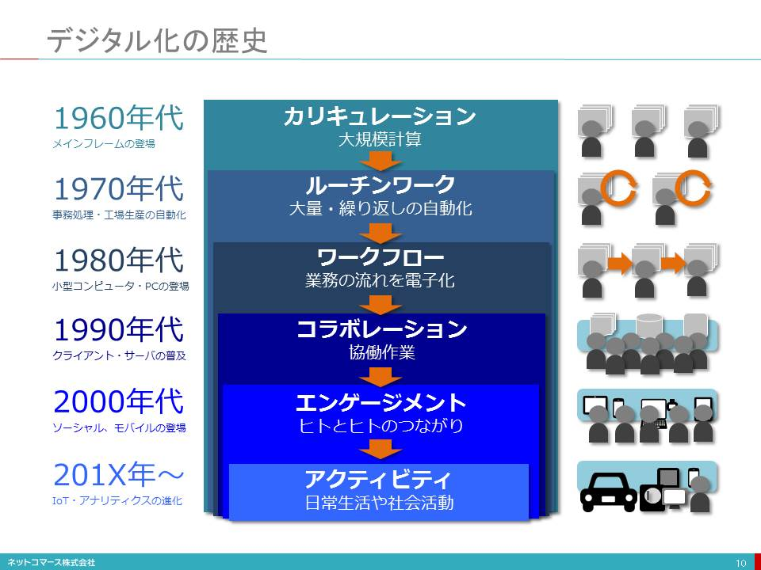
- 1950年代
- 1950年代、コンピュータがビジネスで使われるようになりました。1964年、いまで言うメインフレームの前身であるIBM システム/360が登場し、ビジネス・コンピューターの需要が一気に拡大します。そして、大規模な計算業務のデジタル化が始まりました。
- 1970年代
- 1970年代、コンピュータの用途はさらに広がります。伝票の発行や経理処理、生産現場での繰り返し作業など、定型化された繰り返し業務（ルーチンワーク）がコンピュータによって処理される時代になったのです。
- 1980年代
- 1980年代、小型コンピュータやPCの登場により、コンピュータは多くの企業に広く行き渡ります。また、企業内にネットワークが引かれ、個人や部門を越えた伝票業務の流れ（ワークフロー）がコンピュータに取り込まれデジタル化されるようになりました。
- 1990年代
- 1990年代に入り、PCは一人一台の時代を迎えます。そして、電子メールが使われるようになり、文書や帳票の作成をPCでこなし、それらを共有する需要も生まれました。そんな時代を背景にグループウェアが登場し、共同作業（コラボレーション）のデジタル化がすすんでゆきました。インターネットも登場し、コラボレーションはさらに広がりを見せ始めます。
- 2000年代
- 2000年代に入り、FacebookやTwitterといったソーシャルメディアが登場します。また、2007年のiPhoneの登場により、誰もが常時ネットにつながる時代を迎え、ヒトとヒトのつながり（エンゲージメント）が、デジタル化される時代を迎えます。
- そして、いま
- そして、いまIoTの時代を迎えようとしています。モノが直接ネットにつながり、モノやヒトの状態や活動がデータとして集められ、ネットに送り出される仕組みが出来上がりつつあります。私たちの日常生活や社会活動に伴う全てのアクティビティがデジタル化されようとしているのです。
- IoTがもたらす２つのパラダイムシフト
- 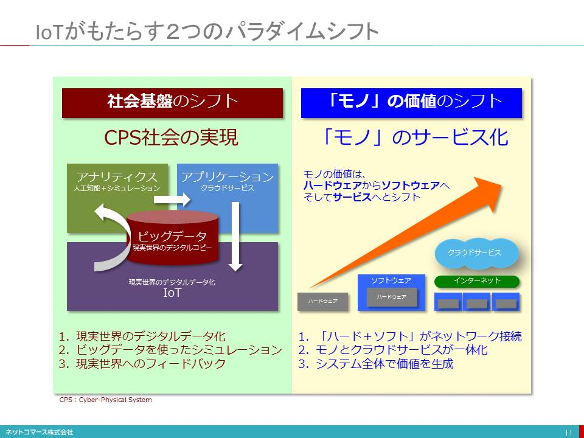
- 【図解】コレ１枚でわかるIoTがもたらす２つのパラダイムシフト
- IoT（Internet of Things）は、既存の常識をどのように変えようとしているのでしょうか。
- 社会基盤のシフト
- IoTがもたらす常識の転換（パラダイムシフト）のひとつは、現実世界（Physical World）と電脳世界（Cyber World）を一体化させた新たな社会基盤の実現です。
- スマートフォンやウェアラブル端末、車や建物、公共交通機関や道路・公共施設などに組み込まれたセンサーによって、私たちの生活や社会の出来事は、デジタルデータとして収集され、インターネットに送り出されます。
- このようなネットワークにつながるデバイスの数は、2015年の180億個から2020年には500億個に達すると言われており、これによって現実社会が、より緻密に、そしてリアルタイムにデータ化され、電脳世界に、そのデジタルコピーを作り上げる仕組みが構築されようとしています。
- このデジタルコピーを使って、様々なシミュレーションや人工知能を使った解析を行い、現実社会の出来事を深く理解し、様々な洞察や最適解を導き出すことができるようになります。この結果は、様々な業務サービスや情報提供サービスを介して、現実世界に再びフィードバックされ、新たな活動や変化をもたらします。そして、その動きは、センサーに収集され、また電脳世界に送られます。
- このような一連の仕組みをCyber-Physical System（CPS）と言います。
- CPSは、日常生活や社会活動の様々な領域に組み込まれ、これまでにできなかったような新たな価値を生みだしてゆくことになるでしょう。
- 「モノ」の価値のシフト
- もうひとつのパラダイムシフトは、「モノ」の価値の本質をハードウェアからサービスへとシフトさせることです。
- かつて、モノの性能や機能、品質や操作性は、ハードウェアの「メカニズム」や「作り込み」といった物理的実態によって実現されました。しかし、いま多くのモノには、コンピューターが組み込まれ、ソフトウェアによって、これらが実現されています。もちろん、ハードウェアの価値が失われることはありませんが、もはやハードウェアだけでは、モノ全体の価値を実現できない時代を迎えています。
- IoTの登場は、この「ハードウェア＋ソフトウェア」としてのモノをインターネットにつなぎ、クラウドと一体化することで、これまでにはできなかったサービスを実現しようとしています。
- 例えば、自動車や設備機器に組み込まれたセンサーが、クラウドサービスに送られ解析され、予防保守の必要性やタイミングを個別に判断し、故障で動かなくなる前に点検や修理を行うことを可能にします。これにより、ユーザーの満足度は高まり、さらに保守・点検のタイミングや、そこに関わる機材や部品、エンジニアの稼働が個別最適化され、サービス・コストの削減が可能になるでしょう。
- また、稼働状況がリアルタイムで確実に計測できることから、「モノ」を売らずに、タクシー料金のように使用量に応じて課金するといった「サービスとしてモノ」を提供するビジネスも可能になります。
- 自動車の場合、運転者が安全な運転をしているのか、乱暴な運転をしているのかを把握し、保険料率を変動させるといったサービスも考えられます。さらに、ネットワークを介して、モノに組み込まれたソフトウェアを更新し、機能や性能、操作性を向上させることも可能になります。
- このように、モノそのものではなく、モノを含むサービス全体が新たな価値を生みだすことになろうとしているのです。
- この２つのパラダイムシフトが、私たちの生活や社会活動、そしてビジネスを大きく変えてゆくことになるでしょう。
- デジタルコピー／デジタルツイン
- 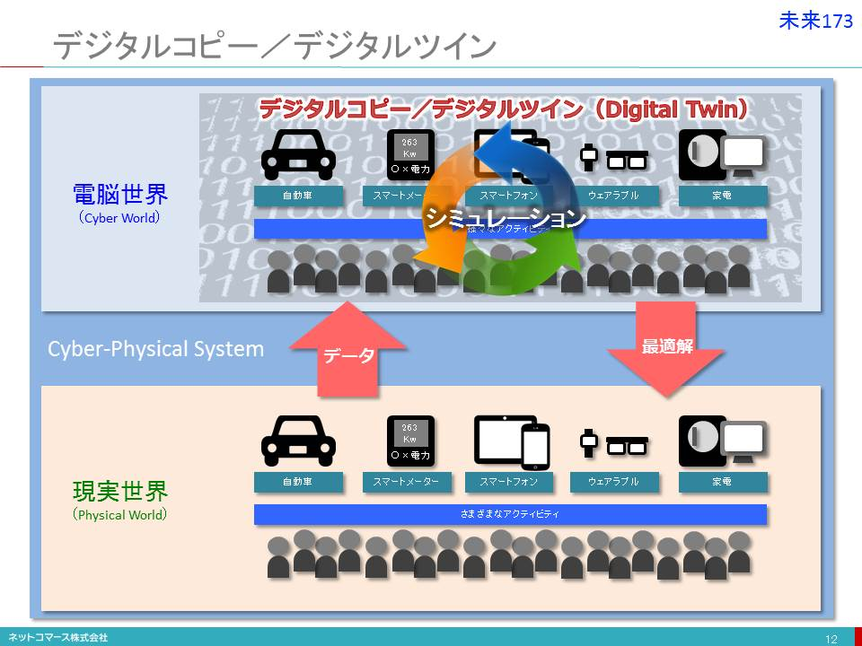
- 【図解】コレ１枚でわかるCPSの仕組み
- IoT（Internet of Things：モノのインターネット）は、私たちの住む現実世界の出来事をデジタル・データに変換し、ネットの世界（Cyber World：電脳世界）に送り出す仕掛けです。そんなIoTが普及すれば、私たちの日常生活や社会活動は、きめ細かくリアルタイムにデジタル・データ化されることになります。
- IoTを支えるインターネットにつながるモノの数は、2020年には500億個、そのわずか5年後の2025年には2兆個にもなると言われ、そのときには一人当たり250個ものインターネットにつながるモノに私たちは取り囲まれる計算になるのです。つまり、私たちの住む現実世界（Physical World）の緻密でリアルタイムなデジタル・コピーが電脳世界に出来上がる、そんな時代を迎えようとしているのです。
- このような現実世界のデジタル・コピーを持つことの価値は、それを使った様々な実験（シミュレーション）を電脳世界で行えることにあります。例えば、自動車や鉄道の交通網やそれを利用する人々の動きのデジタル・コピーを使い、そこに大地震や大津波が襲ってきたことを想定して、様々な実験を行うことができます。例えば、大津波で沿岸部の道路が寸断され、都心部ではビル火災が起きて道路が通行できなくなります。また、鉄道は停まりターミナル駅に人があふれてしまいます。そんな世界をいろいろと条件を変えて再現し、そのときにどのように対処すれば一番被害を減らすことができるのかをいろいろな確度から検証することが可能になり、防災・減災に役立てることができるのです。このような実験を現実社会で行うことは決してできません。
- また、ウェアラブル・デバイスを持つ数千万人あるいは数億人の身体状況や行動のデータを様々な角度から分析し、病気を起こす可能性の高い生活習慣を見つけ出し、生活習慣の改善や予防措置を促すことができれば、大きな国家財政負担になっている医療費を削減することにつながります。
 このような現実世界と電脳世界が、デジタル・データでつながり、一体となって機能する仕組みがサイバーフィジカル・システム（Cyber Physical System/CPS）です。
このような現実世界と電脳世界が、デジタル・データでつながり、一体となって機能する仕組みがサイバーフィジカル・システム（Cyber Physical System/CPS）です。- ところで、電脳世界に構築されるこのデジタル・コピーですが、現実世界に存在するモノやヒトと根本的に異なる特徴があります。それは、物理的・地理的な障壁が存在しないことです。
- 例えば、私たちの住む現実世界では、自分の肉体を瞬時に数千キロ離れた別の場所に移動させることはできません。また、モノに直接触れなければ、それを使うことはできません。また、時間を巻き戻してやり直すことも未来の世界でいろいろと試してみることもできないのです。しかし、物理的実態のない電脳世界ではその制約はありません。物理的、時間的、地理的な制約故に実現できない仕事の流れも電脳世界では実現できるのです。
- このようにデジタル・データによって構築される電脳世界においては、現実世界では実現できなかった仕事の流れを作り出すことができます。例えば、多くの自動車の利用状況がリアルタイムに電脳世界に開示されていれば、必要な時に誰もが自動車の空き時間を把握でき自動車を協同で利用することも可能になるでしょう。また、仲介者を介することなく世界中と様々な取引をすることもできます。このような仕組みは、ヒトやモノが物理的、地理的に固定されている現実世界だけではなしえないことなのです。
- 「既存の仕事の仕組みをデジタルで組み替え、新たな価値を生みだす」
- 効率化だけではない新たな価値を生みだすこのような取り組みは、「デジタル・トランスフォーメーション」と呼ばれています。CPSによってますますこのデジタル・トランスフォーメーションが拡がってゆくことになるのです。
- モノのサービス化（1）
- 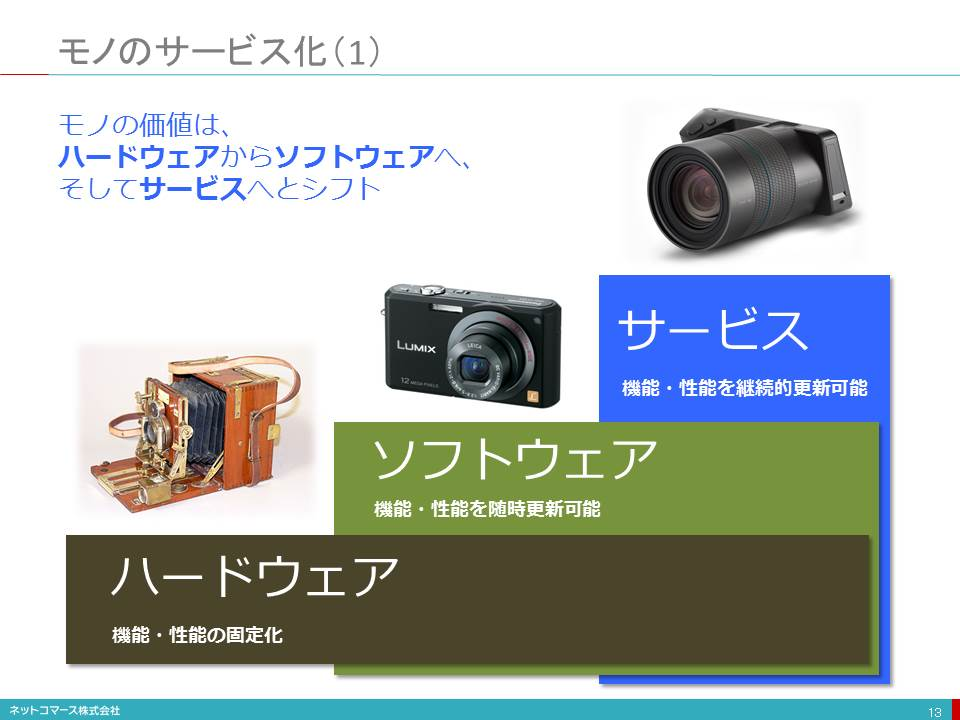
- IoTは「モノ」の価値をハードウェアからサービスへとシフトさせようとしています。
- かつてモノの性能や機能、品質や操作性は、ハードウェアの「細工」や「材料」によって物理的に実現していました。しかし、いま多くのモノには、コンピューターが組み込まれ、ソフトウェアによってこれらが実現しています。もちろん、ハードウェアの価値が失われることはありませんが、ハードウェアだけでは機能や性能を生みだせない時代を迎えています。
- 例えば、以前のカメラは、露出、ピント、絞り、シャッター・スピード、感度、発色などは、ハードウェアであるギアやカムなどの機械部品の細工やフイルムに塗布する感光剤の性能などによって実現していました。しかし、最近のデジタルカメラは、そこに組み込まれたソフトウェアによってこれらを実現しています。
- いまでもハードウェアは、モノの価値を決める要素であることに変わりはありませんが、それは全体の一部に過ぎません。むしろソフトウェアの機能や性能が、モノの価値を実現する上で大きな役割を占めるようになりました。
- この「ハードウェア＋ソフトウェア」で構成された「モノ」がネットワークにつながれば、モノの価値の本質はサービスへとシフトします。例えば、
- デジタルカメラをインターネットにつないで、ソフトウェアを更新すれば、連写機能を向上させたり、アートフィルターの種類を増やしたりと、買ったときよりも高機能なものに変えてくれます。
- 米国の電気自動車テスラのモデルS／Dシリーズには、ハードウェアに自動運転機能が組み込まれています。いまは法律上の規制もあって完全な自動運転はできませんが、法律が整えばソフトウェアの更新によって完全な自律走行ができるようになるということです。
- AppleのiPodは、楽曲ダウンロード・サービスのiTunes Music Storeや定額聴き放題サービスのApple Musicというクラウド・サービスと一体となって提供されるからこそ、人気を博しているのです。
- このように、モノがネットワークにつながることで、モノは購入した後も継続的に機能を向上させ進化し続けます。「モノ」は、それを作り、出荷することで完結するのではなく、作られたモノとその後のサービスが一体となって、モノの価値を生みだし続けるのです。
- また、IoTは稼働状況をリアルタイムで確実に計測できるしくみでもあります。これにより、「モノ」を売らずに、タクシー料金のように使用量に応じて課金するといった「サービスとしてモノ」を提供するビジネスができるようになります。例えば、先に紹介した航空機用のジェット・エンジンを製造・販売する英ロールスロイスは、エンジンという「モノ」を販売するのではなく、実際に使用した時間と出力の積に応じて、エンジンの利用者である航空会社に利用量を請求する「Power by the Hour」というサービスを提供しています。エンジンに組み込まれたセンサーが、エンジンの使用状況や各部品の消耗具合、不具合などを検知し、ネットを経由してそのデータを送ります。そのデータは解析され、修理・点検の必要性やタイミングを個別に判断し、故障で動かなくなる前に対応できるようになります。これにより、より安全な運行が実現し、機材の稼働率が上がることでユーザーの満足度は高まります。さらに保守・点検のタイミングや必要な部品の在庫、エンジニアの稼働が最適化されることから、サービス・コストの削減が可能になります。他にも
- 自動車で運転者が安全な運転をしているのか乱暴な運転をしているのかをセンサーで捉え保険料率を変動させる自動車損害保険
- エレベーターやエスカレーターに組み込まれたセンサーから集められたデータから故障の予兆を見つけ出し故障する前に修理点検を行う保守サービス
- 農業用ハウスに組み込まれたセンサーで土壌の成分やハウス内の温度や湿度、二酸化炭素の濃度を把握し、生育状況に応じてそれらを自動で調整してくれる植物工場
- なども実現しています。
- このように、モノそのものではなく、モノを含むサービス全体が新たな価値を生みだす時代を向かえようとしています。
- モノのサービス化（2）
- 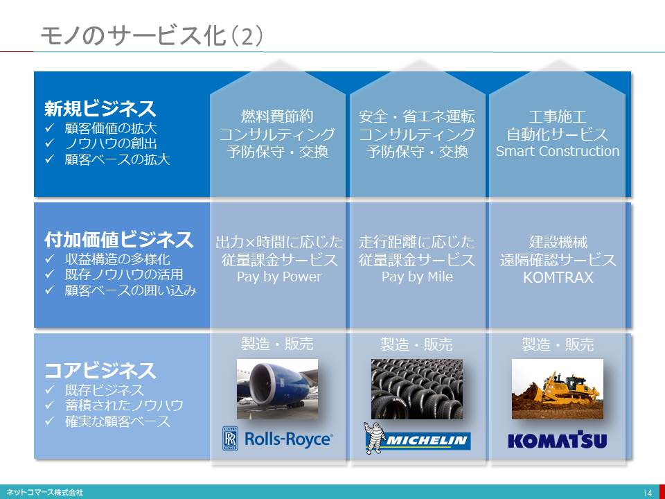
- タイヤを売らないタイヤメーカー、建設機械を売らない建築機械メーカー、ジェット・エンジンを売らないジェット・エンジン・メーカー。これまでの常識では考えられないビジネスが登場しています。
- 仏タイヤメーカーのミシュランは、運送会社向けに走行距離に応じてタイヤの利用料金を請求するビジネスをはじめています。さらに、燃料を節約できる走行方法のアドバイスを、インターネットを介して運転手に提供したり、省エネ運転の研修を行ったりと、これまでのタイヤメーカーではあり得なかったビジネスに踏み出しています。このサービスによって運送会社は投資を抑えることができるばかりでなく運行コストも削減でき、経営体質強化に貢献することができます。
- 建設機械大手のコマツは、無人ヘリコプターのドローンで建設現場を測量し、そのデータと設計データ使って建設機械を自動運転し工事をするサービスを提供しています。これまで熟練者に頼っていた精密な測量や難しい工事を経験の浅い作業員でもこなすことができ、人手不足に悩む業界にとっては大きな助けとなっています。
- 世界三大ジェット・エンジン・メーカーの一社である英ロールスロイスは、ジェット・エンジンを販売するのではなく、ガス料金や水道料金のように、使用した出力と時間に応じて課金するビジネス「Power by the Hour」をはじめています。このサービスによって、顧客である航空会社はジェット・エンジンを購入する必要はなくなり、旅客が料金を支払ってくれるときだけ使用料を支払えばいいので大助かりです。このようなことが可能になったのは、ジェット・エンジンの稼働データをセンサーと衛星回線を使って確実に把握できるようになったからです。このデータは料金支払いのためだけではなく、エンジンの状態を把握することにも役立ち、故障や事故が起こる前に不具合の予兆を発見し、事前に点検や保守作業をおこなうことができます。そのおかげで欠航を減らすことができれば、お客様である航空会社に安定した収益をもたらし、顧客の信頼を確かなものにしてくれます。また、データを分析することで燃費を向上させる操縦方法や航路のアドバイスもできるようになり、コンサルティング・ビジネスという新規事業にも参入しています。サービスを提供するロールスロイスも点検の回数を減らすことができ、余計な部品在庫を抱える必要もなくなり、コスト削減に大いに貢献しています。両者にとって、Win-Win（双方にとって好都合なこと）の関係を築くことができます。
- 製造業のサービス化
- 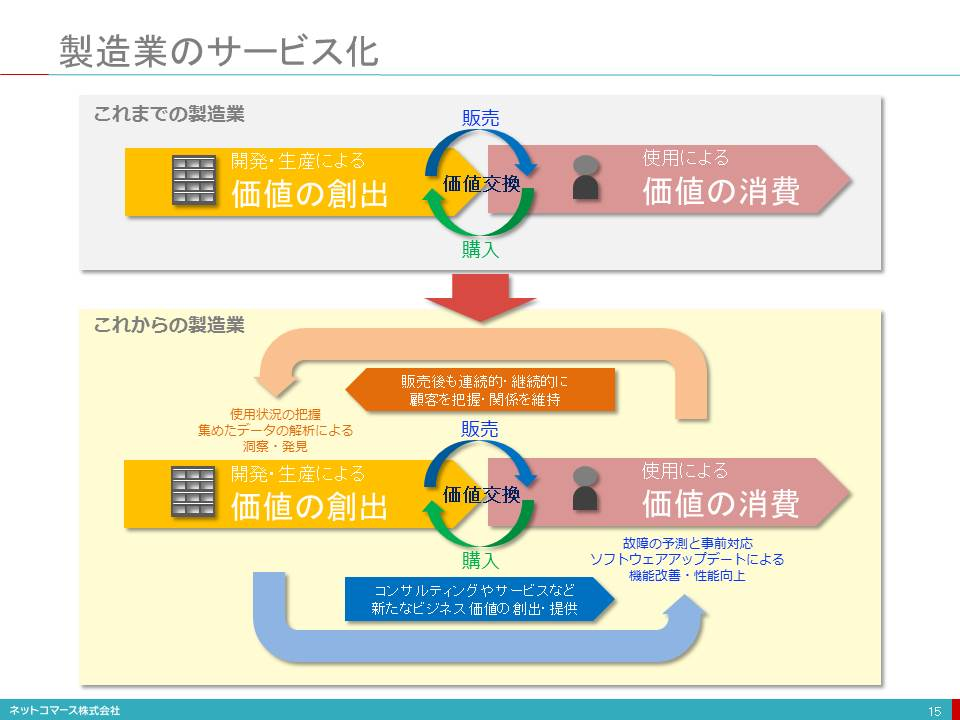
- これらを可能にしているのは、タイヤや建設機械、ジェット・エンジンに組み込まれたセンサーやGPSがそれぞれの稼働状況や位置をリアルタイムで捉えることができるようになったからです。そのデータは、携帯電話回線や衛星通信を使ってサービス提供企業の情報システムに送られ分析されます。そして、適切な判断やアドバイス、機器の制御が自動的におこなわれる仕組みができているのです。
- ここに紹介した製品だけを見れば、どれも昔から使われているものです。そのため、長い競争の末に機能や性能ではどれも完成度が高くなり、「どれを買っても同じ」と言えるくらい差別化の難しい製品となってしまいました。そのような中で、各社は利用者の利便性や求める価値を改めて問い直し、「モノをサービスとして提供する」という方法で、新しい魅力を生みだし、競合他社との差別化を図ろうとしています。
- 「モノを売るのではなく、成果を売る」
- そう言い換えてもいいかもしれません。もはや製造業はよいモノを作るだけでは勝ち残れない時代となり、これまでの「故障すれば駆けつけて修理する」といった顧客との関係だけでは差別化は難しくなりました。そこで、付帯業務も含めた業務の代行やデータ解析による故障予知などを長期かつ包括的な契約で提供することで、
- 顧客のダウンタイムを最小化する
- 顧客の経費を削減する
- 顧客の人手不足を解消する
- など「顧客の成果に直接貢献する」サービスへとビジネスのあり方を変えようとしているのです。
- 「モノのサービス化」と言われるこの動きは、モノに組み込まれたセンサーによってモノの状態をデータ化し、インターネットに送り出す仕組みであるIoT（モノのインターネット：Internet of Things）とよばれる技術が土台となっており、今後も大きな広がりが期待されています。
- 「作って売ってしまえば終わり」のこれまでの常識から、「売ってからも継続的に関係を持ち続ける」という新しいしこれからの常識へと製造業は大きく変わろうとしています。
- ガソリン自動車と電気自動車
- 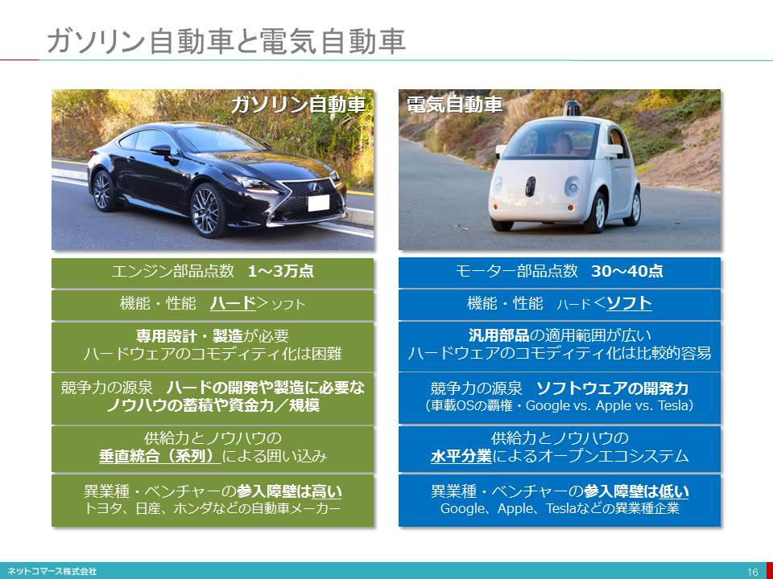
- 自動車業界が、GoogleやApple、Microsoftそして新興の電気自動車メーカーTeslaといった企業に戦々恐々としています。その背景には、電気自動車の普及と自動車のソフトウエア化があります。
- まず電気自動車（EV）ですが、エンジン自動車に比べ圧倒的に部品点数か少なくなります。また、部品の種類も複雑な機構を組み合わせた機械部品から比較的構造が単純な電気・電子部品が中心となり、機械加工や組み立てノウハウの蓄積がない企業でも参入が容易になります。米Teslaや日本のGMLなどのEVベンチャー企業が参入できるのもこのような背景があるからです。
- また、車の機能や性能の多くがソフトウエアに依存するようになります。これは、エンジン自動車でも言えることですが、電気自動車になれば、その割合はさらに高まり、ソフトウエアの開発力が製品の競争力になると考えられます。
- GoogleやApple、Microsoftは、このソフトウエアを様々な車で利用できるプラットフォーム=車載OSとして提供しようと動き始めています。例えば、GoogleのAndroid AutoやAppleのCar Play、MicrosoftのMicrosoft Autoは、いまでこそカーナビやテレマティクスの機能に限定されていますが、やがて自動運転機能を提供し、自動車の走行をも制御する車載OSへと進化してゆくでしょう。
- もし車載OSで覇権を握られれば、Windowsがコンピューターで、Androidがスマートフォンでそうであったようにハードウェアはコモディティ化・汎用化し、既存の自動車メーカーが長年蓄積してきた独自の製品開発力、機械加工や組み立てなどの競争力の源泉を失ってしまうことになります。
- 半導体メーカーの米NVIDIAはこのような動きを背景に、自動運転をも視野に入れた車載SoC（System On A Chip、1チップでコンピューターの機能をすべて統合しているチップのこと）を提供しはじめており、他の半導体メーカーや電子機器メーカーも同様に汎用部品提供の動きを展開しつつあります。
- このようなソフトウエア企業の動きに対し、自動車メーカーや車載機器・半導体メーカーが主導する形でオープンな車載OSとしてAGL（Automotive Grade Linux：オートモーティブ・グレード・リナックス）を開発しようという取り組みも始まっています。これは、Linuxをベースとした車載OSで、高度安全支援や自動運転を視野に入れて開発が進められています。
- また、自動車はコネクテッド・カーとしてインターネットにつながり、車載OSとクラウド・サービスとの連携を実現し、車両単独ではできない機能やサービスを提供できるようになり、自動車のあり方や価値を大きく変えてゆくと考えられます。
- 米カリフォルニア州は、ZEV（Zero Emission Vehicle）規制を定め、州内で一定台数以上自動車を販売するメーカーは、その販売台数の一定比率を、排出ガスを一切出さない電気自動車や燃料電池車にしなければならないと定めています。ただし、電気自動車や燃料電池車のみで規制をクリアすることは難しいため、プラグインハイブリッドカー（ハイブリッドカーは除外）、天然ガス車、電気自動車などのクリーンな車両などを組み入れることも許容されています。このような動きは世界にも拡がりつつあり、電気自動車は今後大きな普及が期待されています。
- IoTの機能と役割の4段階
- 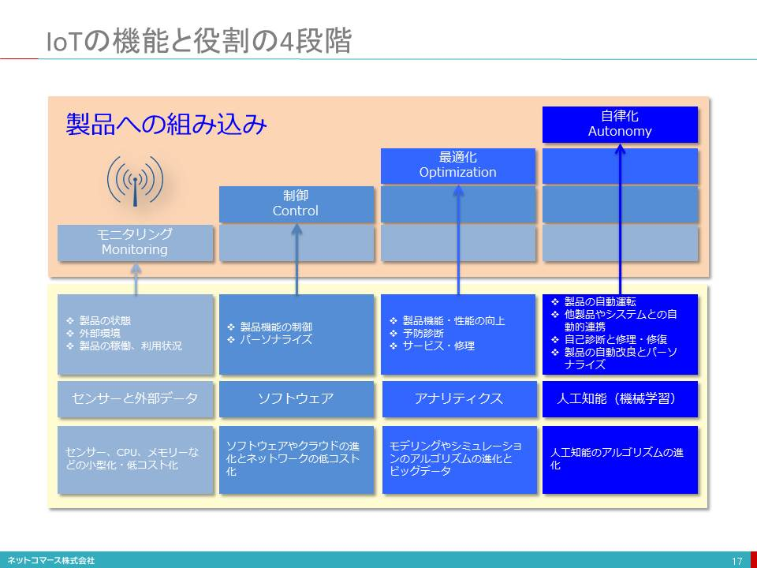
- 【図解】コレ１枚で分かるIoTの機能と役割の4段階
- IoT（Internet of Things）の機能や役割には、その特性に応じた4つの段階があります。
- 監視
- センサーを使って、モノそのものや周囲について、状況や変化を監視することができます。ここで得られるデータは遠隔地からの機器の監視、マーケティングや製品設計のためのデータの収集などに役立てることができます。例えば医療機器の状況を常に監視し続けたり、建設機械の稼働状況などを常に把握したりすることができ、故障や不具合が生じたら直ちにサービス員を急行させるなどの迅速な対処ができるようになります。
- 制御
- 通信を介して外部から制御できます。ソフトウェアによってモノの状況や周囲の環境が変化すれば、それに応じて指示を出し、自動で動作させることも可能です。例えば、人が玄関に近づくとセンサーがその動きを感知し監視カメラを起動、その映像をスマートフォンに送ることができます。それを見て玄関の鍵を開いたり、不在であれば遠隔地から音声で応対したりといったことができるようになります。また、家に帰る前にスマートフォンからエアコンのスイッチを入れておくこともできます。
- 最適化
- 監視機能と制御機能を組み合わせることで、モノの状態や動きを最適名状態に保つことができます。そのためには、モノに組み込まれたセンサーにより取得・蓄積されたデータをソフトウェアで解析し最適な状態を導き、その状態になるようにモノを制御します。例えば、風力発電では、風力や風向きに応じて、最も発電効果が高くなるようにて風車のブレードの確度を調節することができます。
- 自律化
- モノ自身や周囲の状況や変化を継続的に監視し、その時々の最適な状態をリアルタイムで判断し、モノを自動で制御することができます。また、お互いを通信機能で連係させることで、それぞれの状況を共有し全体として最適な動作をさせるように協調制御することもできます。例えば、部屋の形状や家具の配置、床の汚れ具合を探りながら部屋を清掃するロボット、周囲の道路状況や走行車両、人の動きや標識などの変化をリアルタイムで捉え自動運転する自動車などがあります。さらにその自動運転自動車が他の自動車や信号機と状況を共有することで、スピードを協調して制御することで渋滞を解消し、信号待ちを無くすことができます。
- 「2015年4月号 特集：IoTの衝撃」を参考に作成
- http://www.dhbr.net/ud/backnumber/54f69910abee7b70cf000001
- IoTの3層構造
- 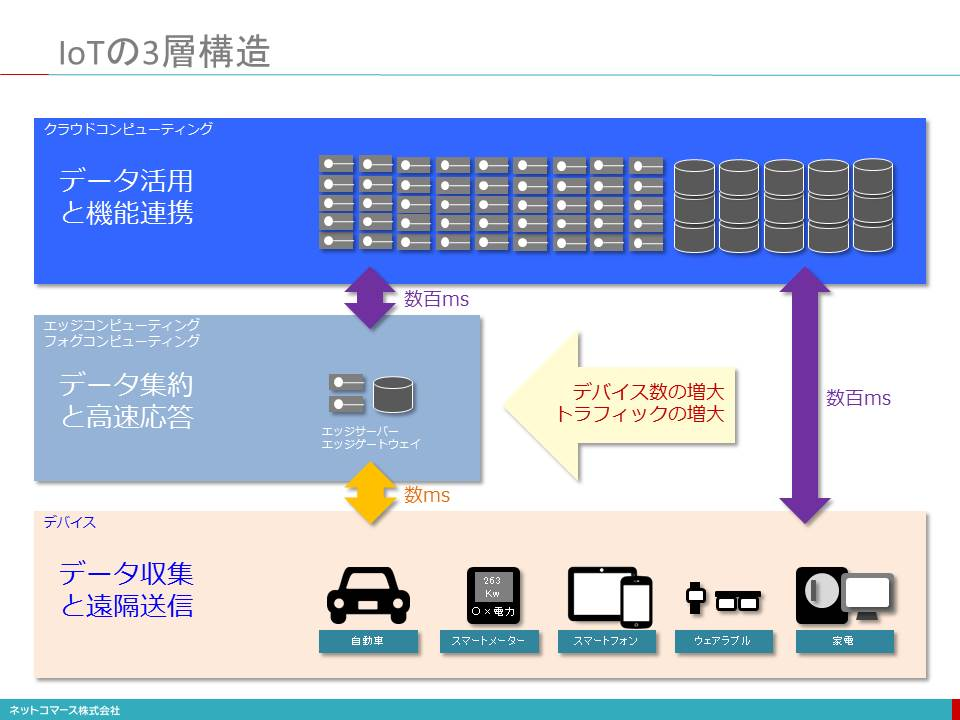
- 【図解】コレ１枚でわかるIoTの三層構造
- IoTは、データを収拾してネットワークに送り出す「スマート・デバイス層」、そのデータを収拾・集約しクラウドにデータを送ったり、すぐに結果を返さなければならない処理を行ったりする「エッジ・コンピューティング層」、集められた膨大データを解析し、アプリケーションを実行、再びモノへとフィードバックする「クラウド・コンピューティング層」に大別することができます。
- 「スマート・デバイス層」
- 「スマート・デバイス層」は、センサーや外部機器をつなぐためのインターフェイス、ネットワークにデータを送り出す通信機能、それらを制御するための処理機能が組み込まれたモノのことです。ここで、モノ自身から生みだされるデータや周辺のデータ、さらには接続された外部機器からのデータを受け取り、それをネットワークに送り出します。
- 「エッジ・コンピューティング層」
- それらデータが直接クラウドに送り出される場合もありますが、モノの周辺でデータを一旦受け取り、すぐに処理してフィードバックする、あるいは集約して必要なデータのみをインターネットを介してクラウドに送り込む「エッジ・コンピューティング層」が介在する場合があります。
- このような仕組みが必要になるのは、モノの数が莫大なものになると次のような問題が起こるからです。
- 個々のモノに対する回線を確保するために相当のコストがかかる
- 送り出されるデータが膨大になりネットワークの負荷が高まってしまう
- モノの監視や制御に負荷がかかり、クラウド集中では処理しきれない
- 以上の問題に加え、時にはモノやその周辺の変化に即応してモノを制御したり、管理者や利用者にすぐに情報を提供したりといった対応も必要になりますが、インターネットを介してクラウドにデータを送り、そのフィードバックを受け取ろうとすると、距離が離れていることもあってどうしても大きな遅延が生じてタイミングを逸する可能性もあります。そこで、モノの置かれている周辺で分散処理をさせ、これらの問題を解決しようというわけです。
- クラウド（雲）よりも地面に近いモノの周辺に置かれることから「フォグ（霧）コンピューティング」と呼ばれることもあります。
- 「クラウド・コンピューティング層」
- 「クラウド・コンピューティング層」は、これらスマート・デバイス層やエッジ・コンピューティング層から送られてきたデータを分析し、アプリケーションで利用します。その結果は、再び「モノ」の制御や使用者・管理者への情報提供というカタチでフィードバックされます。
- IoTの様々なアプリケーションは、このような三層構造によって構築されてゆくと考えられています。
- クラウドから超分散へ
- 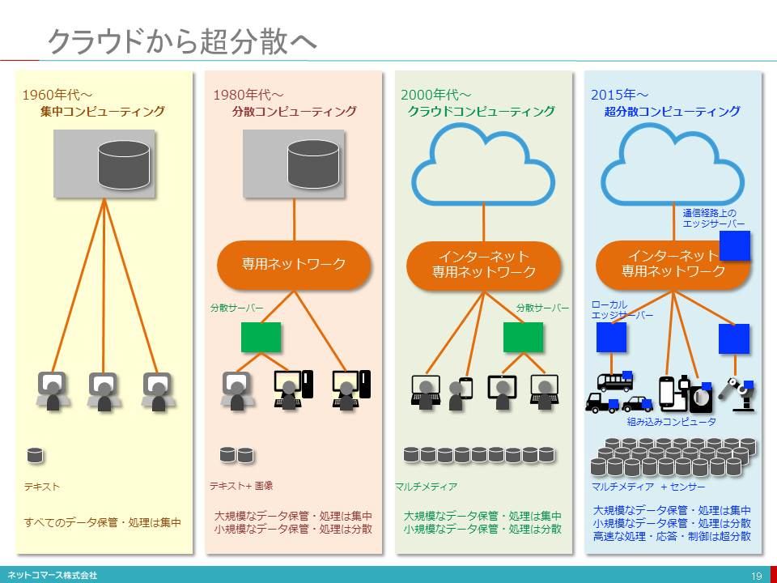
- 【図解】コレ１枚で分かる超分散「エッジ・コンピューティング」の時代
- 1950年代
- 1950年代、ビジネス分野でのコンピューター利用が始まった当初は、計算業務を担当部門に依頼し、順次処理して結果を依頼者に返すといったパッチ処理による利用が一般的でした。
- 1960年代
- 1960年代に入り、コンピューターをタイプライター端末やCRTディスプレイ端末から直接利用するタイムシェアリング方式へと発展してゆきます。これら端末は、いまのパソコンのようなデータの処理や保管の機能はありません。データの入力と出力のみを受け持ち、データの処理や保管は全てひとつのコンピューターで集中処理されていました。また、端末とコンピューターをつなぐ専用のケープルや通信回線は低速で、やり取りできるデータもテキストに限られていたのです。
- 1980年代
- 1980年代、ミニ・コンピューター（オフコン）やオフィス・コンピューター（ミニコン）、そしてパーソナル・コンピューター（パソコン）といった小型で安価なコンピューターが登場します。これにより、大型コンピューターを共同利用するだけではなく、部門や個人でもコンピューターを購入できるようになりました。これに伴い、大規模なデータの処理や保管は大型のコンピューターを使い、部門固有の業務や個人で完結する業務は小型のコンピューターを使うといった分散処理が拡がりを見せ始めます。ただ、通信回線の速度はまだ遅く、やり取りできるデータはテキストが主流でした。そこで、テキスト主体の業務処理は共同利用を想定したコンピューター（サーバー）を使い、その結果の表示や加工、編集、画像の利用はパソコン（クライアント）を使う「クライアント・サーバ方式」といわれる連携利用の方法が登場し、普及してゆきます。
- 1990年代
- 1990年代インターネットが登場します。そして、2000年に入る頃から「インターネットの向こうにあるコンピューターを利用する」クラウド・コンピューティングの萌芽が見え始めます。その後インターネットは、高速・広帯域な回線を利用できるようになり、扱えるデータも音声や動画へと拡大してゆきます。この技術進化と相まってクラウド・コンピューティングは急速に普及してゆきます。また利用できる端末類もPCばかりでなくスマートフォンやタブレット、ウェアラブル端末などが加わり、適用業務の範囲も利用者も拡大してゆきます。
- 昨今
- 昨今は、インターネットにつながるデバイスは、自動車や家電製品、ビルの設備や日用品にまで拡がり、そこに組み込まれたセンサーが大量のデータを送り出すようになりました。そのため大量のデータが通信回線、主にはモバイル通信回線に送り出されるようになり回線の帯域を圧迫してしまう可能性が出てきました。そこで、デバイスの周辺にサーバーを配置し中間処理して必要なデータのみを回線に送り出す「エッジ・サーバー」が普及の兆しを見せ始めています。エッジ・サーバーはデータの集約だけではなく、デバイスを利用する現場での即時処理・即時応答が必要な業務やきめ細かなセンサーデータを大量に集めるための仕組みとしても使われています。このようなエッジ・サーバーは、空に浮かぶ雲に見立てた「クラウド・コンピューティング」に対して、地面に漂うように拡がる霧に見立て、「フォグ・コンピューティング」と呼ばれる場合もあります。
- エッジ・サーバーは、デバイスが置かれるローカルばかりでなく、より広い地域をカバーするために通信回線の経路上に置かれるケースも想定されています。
- IoTの普及と共に、クラウドだけではできない大量データの処理や高速応答を受け持つ役割としてエッジ・サーバーによる超分散コンピューティングは、ますます拡がりを見せ始めています。
- インダストリー4.0（1）
- 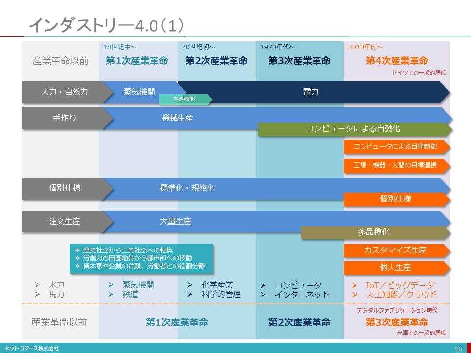
- 【図解】コレ１枚で分かる産業革命の区分
- ドイツの産業政策である「インダストリー4.0（第４次産業革命）」に対して、アメリカでは「第３次産業革命」が提唱されている。両者にどのような区分の違いがあるのだろうか。
- 「インダストリー4.0（第４次産業革命）」
- まず、インダストリー4.0（第４次産業革命）について見てゆくことにしよう。
- 産業革命以前
- 産業革命以前、もの作りは手作業が主体で、水車や馬力などの自然力が一部で使われていた。生産者は、それぞれに仕様を決め、注文生産でもの作りを行っていた。
- 1764年
- 1764年、イギリスでジェニー紡績機が発明され紡績の生産性が飛躍的向上する。同時期、ジェームズワットによって蒸気機関に改良が加えられ、高効率な動力源としての普及が始まる。このイギリスに端を発する大量生産の時代を第１次産業革命と呼ぶ。
- 大量生産は、その効率を追求する過程で標準化や規格化を推し進めた。これによって工業化が進み、農業を中心とする社会から工業を中心とする社会へと変貌を遂げてゆく。この需要を満たすために、労働力は田園地帯から都市部へと移動し、企業化による生産資本の集中、資本家と労働者という役割区分の明確化がすすんでゆく。
- 19世紀後半より
- その後、19世紀後半より、石油の普及もあり、内燃機関（エンジン）も動力源として使われるようになった。さらに、電力が普及し大量生産を支える動力源として広く使われるようになってゆく。また、標準化や規格化と共に、統計的手法を用いた科学的な管理手法も定着し、生産性や品質の向上に貢献するようになった。T型フォードに代表される効率化を追求した量産システムの登場や化学産業の台頭など、軽工業から重工業へ大量生産への取り組みが広がりはじめた時代でもある。これを第２次産業革命と呼んでいる。
- 1950年代から1960年代
- 1950年代から1960年代にかけて、商用コンピューターの普及が始まる。当初は、事務作業を機械化することが主な用途だったが、1970年代に入り、もの作りの現場にコンピューターが使われるようになった。産業用ロボットの普及と相まって生産の自動化がすすめられてゆく。この時代を第３次産業革命と呼ぶ。その後、コンピューターの利用技術の発展と共に他品種少量生産に対応したフレキシブル・マニファクチャリング・システム（FMS）へと適用が拡がってゆく。
- さらに
- さらに、インターネットの普及によりネットワーク接続が、低コストで容易になった。その結果、地域や企業を越える情報の共有と調整と生産に関わるモノの流れの全体最適をめざす、SCM（Supply Chain Management）の適用が拡大する。
- その後
- その後、自動化や自律化技術の進展を背景に、顧客ごとに異なる個別仕様の注文を量産品と同様のコストと短納期で提供できるもの作りを実現し、競争力を高めようという取り組みが始まった。これが、第４次産業革命、すなわちインダリストリー4.0だ。
- 「第３次産業革命」
- これに対し、米国で提唱される第３次産業革命は、上記の第２次と第３次をひとまとめにして、第２次産業革命と区分しているようだ。第３次産業革命は、時間軸で見れば、ドイツの第４次産業革命と重なっている。インダストリー4.0と同様に標準化・大量生産から個別仕様・個別生産に対応する取り組みである。これに加えて、消費者自らが、もの作りに関わる「もの作りの民主化」をすすめようという「デジタル・ファブリケーション」を含め第３次産業革命と位置付けているようだ。個人やコミュニティが、消費の現場で設計し、3Dプリンターを使って「もの作りの個人化・個別化」を実現する。
- 区分の仕方や定義の違いはあるが、デジタル技術を活かし、低コスト、短納期で、もの作りの個人化や個別化に対応し、もの作りの変革を進めようという取り組みであることに変わりはない。これは、第１次産業革命以前の個別仕様・個別生産という個人に最適化されたもの作りへの回帰とも言えるだろう。
- インダストリー4.0（2）
- 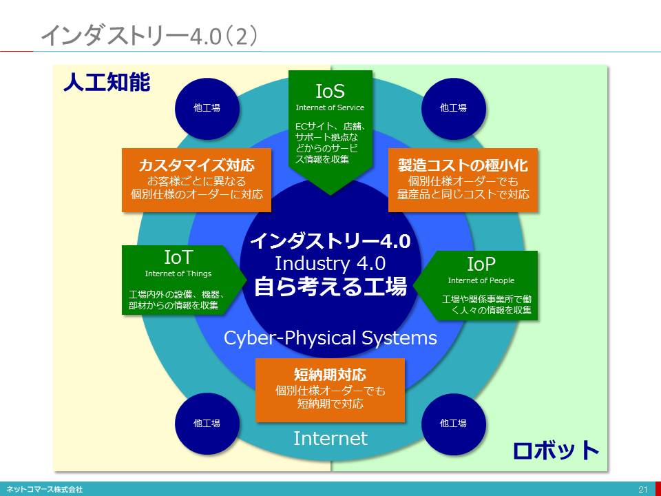
- 【図解】コレ１枚で分かるインダストリー4.0
- 「第4次産業革命（すなわちインダストリー4.0）」。仰々しい名前だが、もの作りの常識を大きく変えようというドイツの産業政策だ。
- 18世紀後半から19世紀にかけて、それまでは手作業で行われていた紡績を、水力や蒸気機関を使った機械による大量生産に置き換える動きが始まった。その後、その他の産業にも広がり工業化の時代へと向かってゆく。これが、第１次産業革命だ。20世紀初頭、もの作りに電力が使われるようになる。加えて、統計的手法を使った操業管理やベルトコンベアーによる大量生産などが普及し、近代的なもの作りへと飛躍した時期を第2次産業革命と呼んでいる。1970年代に入り、コンピューターの普及と共に生産の自動化が推し進められた。これが、第3次産業革命だ。我が国は、この波に乗り、「メイド・イン・ジャパン」の時代を築いてきた。いまは、この第3次産業革命の延長線上にある。このパラダイムを大きく変えようという取り組みが、第4次産業革命、すなわちインダストリー4.0だ。我が国は、この新たなパラダイムシフトの中で、存在感を示せていない。この流れに呑み込まれるのか、それとも新たな輝きを取り戻せるのか、そんな岐路に立たせているように思う。
- では、インダストリー4.0とは何か。これを１枚のチャートにまとめてみた。
- 顧客ごとに異なる個別仕様の注文、これを量産品と同じように低コストと短納期で提供できるもの作りの仕組みを作ろうという取り組みだ。
- これを支えるのが、３つの「インターネット」だ。
- ひとつは、IoT（Internet of Things）。製造機械や工場設備にセンサーが組み込まれ、操業に関わるデータをリアルタイムで収集する。また、素材や材料には、ICタグ（RFID）が付けられ、その流れがリアルタイムで把握される。また、工場で働く人もネットに繋がり、その行動がリアルタイムで把握され、その人の作業状況に従い、最適な作業工程に配置される。さらに、その人のスキルや作業経験、習熟度合い応じ適切なガイドや指示が出される。これが、IoP（Internet of People）だ。また、お客様からの注文やサポートなどの情報もリアルタイムで集められる。これが、IoS（Internet of Service）だ。
- IoT（Internet of Things）
- 製造機械や工場設備にセンサーが組み込まれ、操業に関わるデータをリアルタイムで収集する。また、素材や材料には、ICタグ（RFID）が付けられ、その流れがリアルタイムで把握される。
- IoP（Internet of People）
- また、工場で働く人もネットに繋がり、その行動がリアルタイムで把握され、その人の作業状況に従い、最適な作業工程に配置される。さらに、その人のスキルや作業経験、習熟度合い応じ適切なガイドや指示が出される。
- IoS（Internet of Service）
- また、お客様からの注文やサポートなどの情報もリアルタイムで集められる。
- このように、もの作りに関わるあらゆるデータが、リアルタイムで収集されデータとして集められる。つまり、もの作りの現場である現実の世界（Physical World）が、コンピューター世界（Cyber World）にデジタルなコピーとして再現される。このデジタルなコピーで、様々な作業工程や段取りを再現し、最適な方法や手順を見つけてゆく。コンピューター上のシミュレーションなら、何度やっても実作業に影響を及ぼすことはない。そして、最適解を見つけて、もの作り現場に指示を出すと共に、機器の制御や手配を行う。そして、再び、そのデータは、コンピューター世界にフィードバックされる。言うなれば、現実世界とコンピューター世界の間で、「カイゼン活動」を行っているようなものだ。「自ら考える工場」とは、そういう意味である。
- 現実世界とコンピューター世界が密接に連携して実現するこのような仕組みをCyber-Physical Systems（CPS）と言う。このような仕組みを関連する工場がそれぞれに実装し、連携しながらもの作りを行おうというのが、インダストリー4.0だ。これを人工知能やロボットのテクノロジーが支える。
- ドイツでは、産学官をあげてインダストリー4.0に取り組んでいる。その背景には、ドイツの労働単価の高さがある。高い労働単価であっても、世界で通用するコストと品質、そして、サービスを提供することで、競争力を維持し続けたいという想いがあるからだ。
- このような仕組みが実現されれば、労働者はいらなくなり、むしろ就労需要を減らすのではないかという批判もあるようだ。しかし、今のドイツは、近隣諸国からの多くの出稼ぎ労働者によって産業を維持している。また、このような仕組みを実現することで、新たなビジネス機会を創出し、世界におけるもの作りのイニシアティブもとれるはずだとの思惑もある。
- 少子高齢化が進む我が国も、このような取り組みをすすめてゆく必要があるだろう。未だドイツのような大がかりな組織的取り組みには至っていないが、大いに期待したいところだ。
- 3Dプリンタ
- 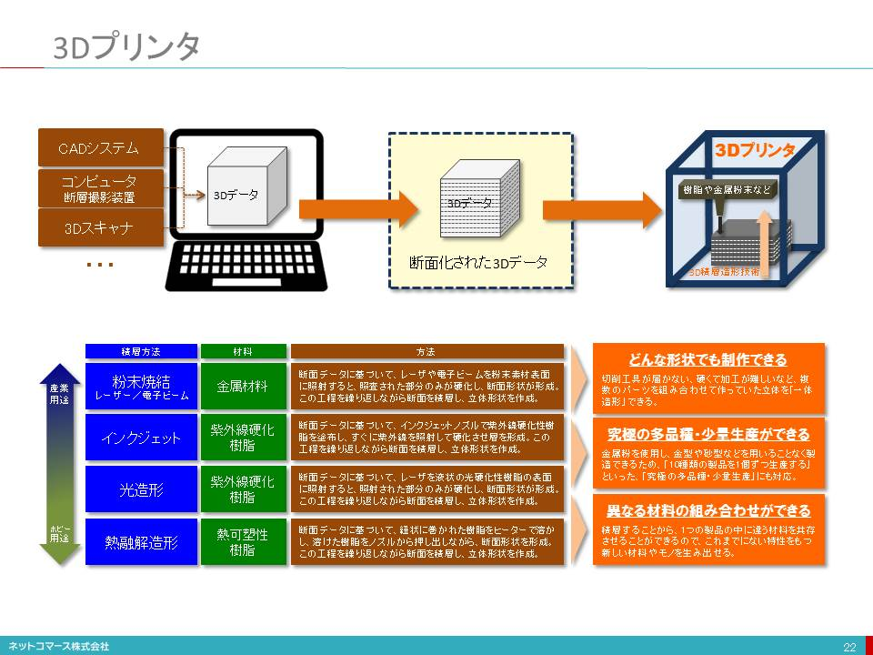
- 「デジタル・データから立体の造形物を直接作り出す装置」が、3Dプリンタです。
- 3Dプリンタは、コンピュータに取り込まれた3Dデータをミクロン単位の薄い断層データに分解し、これに沿って樹脂や金属粉末などを少しずつ積層しながら立体形状に仕上げてゆく「3D積層造形技術」が、一般的に使われています。最近では、食品素材を材料に食べ物を作れる3Dプリンタも登場しています。
- 用途には次のようなものがあります。
- 製造業：CAD（コンピュータを使った設計）データを元に、試作品やモックアップ、鋳物のための中子や砂型、少量生産の特注品など
- 医療:コンピュータ断層撮影装置などの人体内部の立体形状データを元にした手術前検討用臓器模型、患者個別の移植用人工骨格など
- 建築業：提案、説明のための建築模型
- 1980年代に登場した3Dプリンタですが、当時は周辺技術が揃わず、価格も数千万円と高価で普及しませんでした。それが昨今、数十万円、数万円に価格低下したことで、注目されるようになったのです。また、従来、素早く試作する（ラピッド・プロトタイピング）が主な用途でしたが、最近は精度も上がり材料の選択肢も増えたことで、素早く生産する（ラピッド・マニュファクチャリング）へと用途を広げつつあります。
- 3Dデータはネットを介して自由にやり取りできます。例えば、地上で作られた設計データを使い国際宇宙ステーション（ISS）に設置された3Dプリンタで、工具や補修部品が作られるようになりました。また、「もの作りの民主化」が進み、産業のあり方を根底から変えてしまうという意見も聞かれるようになりました。
- ロボット同様、3Dプリンタは、コンピュータと人をつなぐ新しいUI（ユーザー・インターフェイス）として、今後も注目されてゆくことになるでしょう。
- 空間をデータ化するIoTデバイス「ドローン」
- 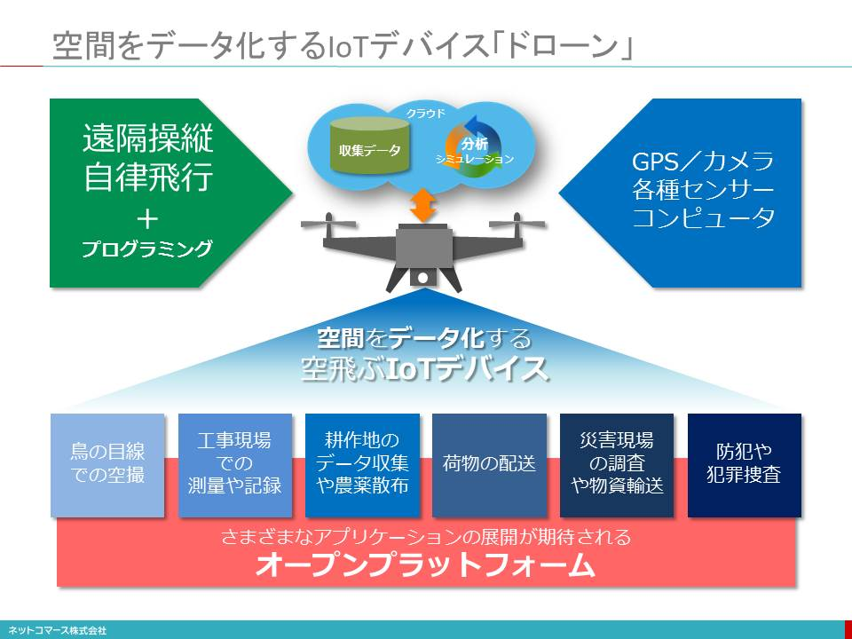
- ドローン（drone）とは、遠隔操作が可能な無人飛行機の総称で、ブーンと羽音を立てて飛ぶ「雄の蜂」を意味する英単語から転じて使われるようになりました。
- 元々は戦場における偵察や攻撃などの軍事用に開発されましたが、農薬散布や空撮などの業務用、あるいは飛ばして楽しむホビー用として用途が広がっています。大きさは全長数センチ程度の小型のものから10メートル超の大型のものまであり、形状は複数のプロペラを持つヘリコプター（マルチコプター）が一般的で、固定翼の機体なども登場しています。
- また、静止画や動画を撮影するカメラに加え、位置情報を捉えるGPS、速度や動きを検知する加速度センサー、傾きや角度などを検知するジャイロセンサーなどを搭載しています。それらを使って自ら機体を安定させ、指定した経路を自動で飛行し元の位置に戻ってくるなどの自律飛行ができる機体もあります。このあたりが従来のラジコン機と異なるところです。
- これらドローンに使われている電子部品は、スマートフォンで使われるカメラやセンサー、プロセッサーや電池などと共通するものもすくなくありません。そのためスマートフォンの大量生産による部品の低価格化によって、ドローンの市販価格も下がり、業務用途ばかりでなく個人での利用も拡大しています。
- 「オープン化」への取り組みも注目されています。ドローンは、カメラやセンサーで様々なデータを捉え、無線を介してインターネットとつなげて、クラウドにデータを送ることができます。「空飛ぶIoTデバイス」とも言えるこのような特徴を活かし、様々な用途での利用が模索されていますが、そのアプリケーションを誰もが容易に開発できるようにし、用途を広げてゆこうというのです。そのために、ドローンに最適化したオペレーティングシステムやプログラミング環境を共同で開発し広く公開する取り組みや、ドローンに必要な機能を標準で搭載したプロセッサーや電子部品のモジュールが市販されるようになりました。特に、IntelやQUALCOMMなど、パソコンやスマートフォンで標準プラットフォームを提供している企業は、次のプラットフォームの覇権を握るべく、積極的に製品開発を行っています。
- ドローンが注目されるのは、これまでには無かった「空間をデータ化できる」有効な手段だからです。IoTが「現実世界をデータ化し、ネットに送り出す仕組み」として注目されていますが、「空間のデータ化」も当然に求められています。その手段として航空機や人工衛星など高高度からのセンシング技術は既にありますが、低高度でしかも移動しながらきめ細かくセンシングする有効な手段はこれまでありませんでした。そこに登場したのがドローンです。まさに未知の領域への可能性が生まれたのです。そのため用途については、まだまだ模索の段階ですが、大きな可能性が広がっていると言えるでしょう。このような理由から注目されているのです。
- そんな模索段階ではありますが、既に様々な用途で使われはじめています。
- 鳥の目線での空撮
- 「鳥の目線」で飛びながら撮影できるのはドローンの魅力のひとつです。
- ヘリコプターや航空機はどんなに低空でも数百メートルの高さからの撮影となります。人間が高台に登っても固定した位置からしか撮影できません。ドローであれば数メートルから100メートルほどの高さで鳥のように飛びながら撮影することができます。しかも機体の振動や風による揺れを補正してなめらかな動画を高画質で撮影できるカメラが搭載された機体も数万円から手に入るようになり、業務ばかりでなく趣味で空撮を楽しむ個人も増えてきています。
- 土木工事現場での測量や記録
- 土木工事の現場で、土地の形状や掘り出す土量を計測し、工事の経過を画像で残すことに使われています。
- 工事現場を複数の角度から撮影して３次元画像を作成、それを工事図面と重ね合わせることで工事箇所や掘り出す土量を計測できます。人間が行うことに比べ、短時間で高精度に計測できるようになりました。また、広い工事現場での作業状況を上空から撮影し、工事の進め方や進捗を記録し、安全管理や進捗管理に役立てようという取り組みも始まっています。
- 耕作地のデータ収集や農薬散布
- これまで勘や経験、人手に頼りがちだった耕作地の様子をデータとして捉えるためにも使われています。
- 例えば、ドローンに搭載した複数の異なる波長の光で撮影する「マルチスペクトル・カメラ」を使い、
- 水分の不足しているところを見つける。
- 肥料の足りないところを見つける。
- 生育具合を確認する。
- といったことがおこなわれています。
- これまで、広い耕作地でこのようなデータを集める手段はありませんでした。もちろん航空機やヘリコプターを使えばそれも可能ですが、膨大なコストがかかり現時的ではありません。ドローンならあまりコストをかけず、１日に何度でも耕作地の上空を飛び回り、撮影することができます。そして、そのデータを活かして効率の良い耕作地の管理や作業が可能になるのです。
- また、田畑への農薬散布にも使われています。人力で撒くには、背中に農薬を背負って歩きながら行わなければなりません。広い田畑なら何日も何週間もかかってしまいます。かといって、車両では田畑の内部までは入り込めませんから散布は困難でした。そのため以前は有人ヘリコプターによる上空からの農薬散布も行われていたのですが、高高度からの散布は農薬が広範囲に飛散することから人体への影響が心配され、次第に行われなくなっています。そこでドローンが使われるようになりました。有人ヘリコプターに比べ低高度で散布ができるので、周囲への飛散量が抑えられるからです。
- 荷物の配送
- 宅急便や郵便などの荷物をドローンで届けようという取り組みが始まっています。
- ドローンであれば、道路の渋滞を気にする必要がなく、地上で配送するよりも短い時間、低コストで届けられると期待されています。また、住宅や集落が広い地域にまばらに点在している地域は世界を見渡せば少なくありません。そういうところで荷物ひとつのためにトラックや配送員を使うのではコストがかかりすぎます。このような課題を解決しようと、ドローンによる配送が試みられています。
- 災害現場の調査や緊急物資の輸送
- 災害現場の調査にも活躍しています。
- 例えば、河川の決壊や土砂崩れなどの災害では被災現場へ入れないことも多く、空からの調査は有効な手段です。しかも、低空でカメラからの画像を見ながら移動し、高画質の動画撮影できるので被害状況を詳細に把握できます。
- また、道路が寸断され孤立した集落に物資を届けるようなときにも役に立つと期待されています。
- 防犯や犯罪捜査
- 警察でもドローンが使われています。
- 例えば、米国では危険な犯罪現場の偵察、メキシコ国境の密入国者の監視に使われています。また日本でも交通事故や犯罪現場の捜査にドローンの導入がすすめられています。
- 我が国では、2015年12月の航空法改正により、ドローンの飛行ルールが明確になりました。これをきっかけとして、ドローンの活用が一層拡がるものと期待されています。
- VR（仮想現実）とAR（拡張現実）
- 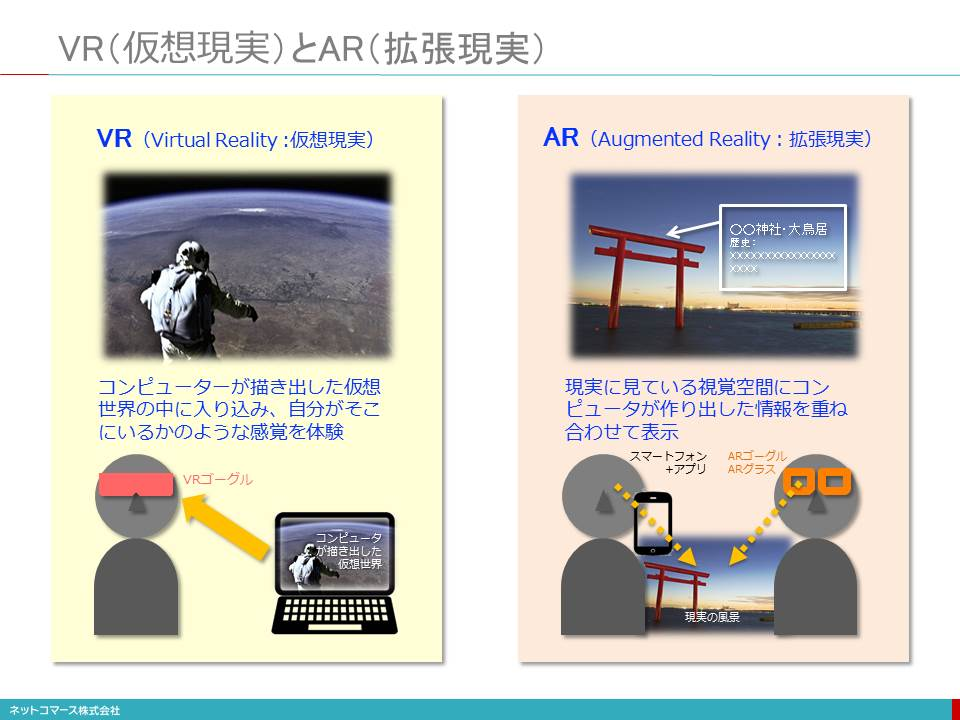
- 【図解】コレ1枚で分かるVRとAR
- コンピューターと人間が視覚を介してつながる技術が登場しています。
- VR（Virtual Reality :仮想現実）
- ゴーグルを被るとコンピューター・グラフィックスで描かれた世界が目の前に拡がります。顔の動きや身体の動きに合わせて映像も動き、ヘッドフォンを被れば音響効果もそれに加わり、まるで自分がそこにいるかのような感覚を体験できます。これがVRです。コンピューターで作られた人工的な世界に自分自身が飛び込み、まるでそれが現実であるかのように体験できる技術です。
- 代表的な製品としては、Oculus Rift、HTC Vive、PlayStation VRなどがあります。次のような用途に使われています。
- 没入感を体感できるゲーム
- 航空機の操縦シミュレーション
- 3D映像で作られた住宅の中にシステムキッチンなどの住宅設備を設置してみせるデモンストレーションなど
- AR（Augmented Reality：拡張現実）
- ゴーグルやスマートフォン越しに見ている現実の建物や設備に、それが何かを説明する「別の情報」が重なるように表示されます。自分が見ている室内の光景や風景に、実際にはそこにないモノや建物が表示され、まるでそこに実物があるかのようです。身体を動かしても位置が変わりません。これがAR技術です。現実に見ている視覚空間に情報を重ね合わせて表示させ、現実世界を拡張する技術です。
- 代表的なゴーグル型の製品としてMicrosoft HoloLensがあります。他にもスマートフォンやタブレットを風景にかざし、背面カメラで映し出された映像に情報を付加するソフトウェア製品も数多く登場しています。次のような用途に使われています。
- ・設備点検の時に見ている箇所についての情報を表示させる
- ・機械の操作パネルの映像上にスイッチやレバーの説明や操作方法を表示させる
- ・現実の空間にモノを表示して製品の検討や教育などに使う
- スマートフォン越しに映し出された建物や風景に説明情報を重ねるように表示して観光案内をする など
- 世界最大級の投資銀行であるゴールドマン・サックスは、世界のVR/AR市場は2025年までにおよそ800億ドル（約9兆円）に達すると予測しています。これは、現在のデスクトップPC市場にほぼ匹敵する規模です。その市場は、現在盛り上がりつつあるゲームやエンターテイメント分野だけではなく、医療分野や産業分野、小売市場など様々な業界で使われるようになるだろうと予測しています。